Research Software
Specialized libraries and scripts developed during my research involving computational quantum many-body physics.
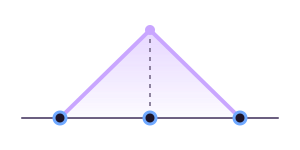
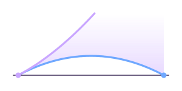
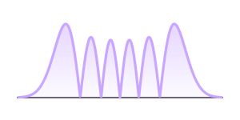
General Software
Random projects made to solve a problem or explore something new.
# ThePhysicsHub
Open source repository of interactive physics simulations created by the cumulative effort of a group of undergraduates, built with p5.js.
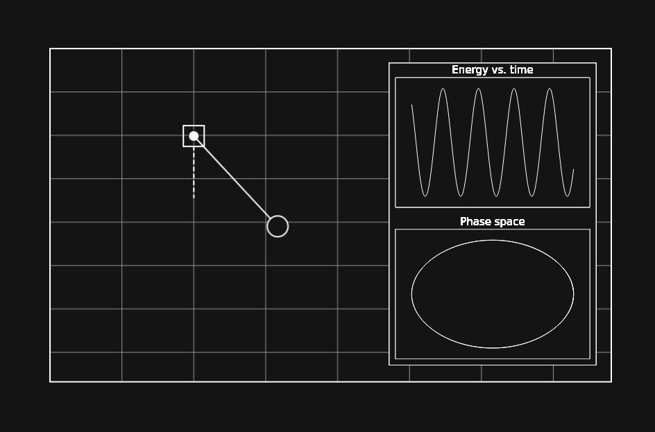
Open project ↗# Schedule Selector
A tool to automate course selection and schedule filtering for IISER Mohali students.
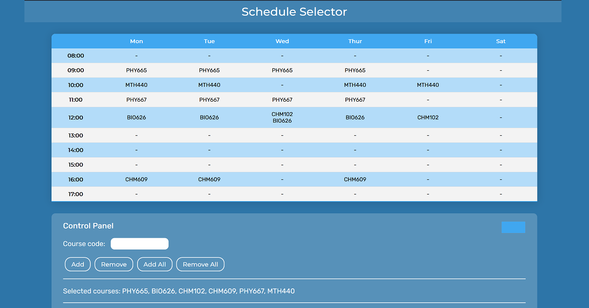
Open project ↗# Tetra Engine
A simple 2D game engine written in Python with an Ascii-based renderer for treasure hunt events at IISER Mohali.
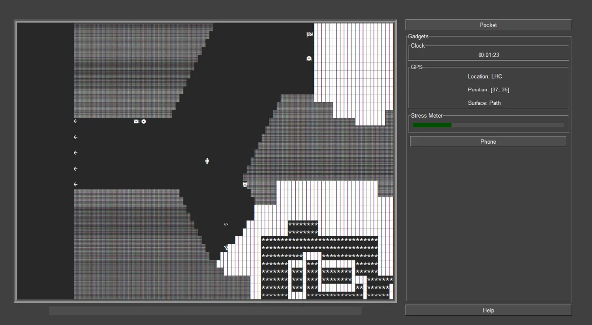
Open project ↗# Pentra Engine
An evolution of the Tetra engine utilizing Pygame for 2D rendering with lighting and shadows.
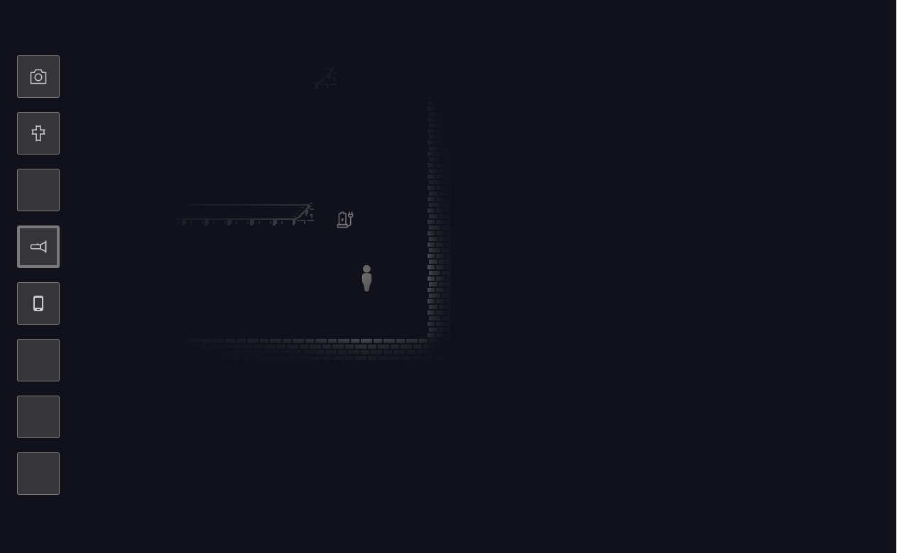
Open project ↗# GDWiiInput
GDExtension to use Wii controllers with the Godot game engine.
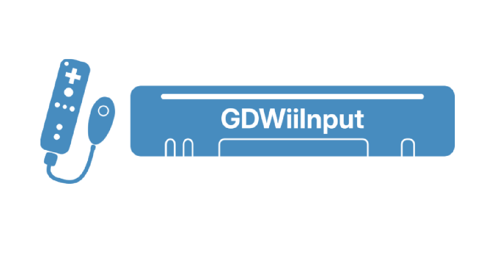
Open project ↗Undergraduate Coursework
Selected academic projects from my time at IISER Mohali.
-
1.
Modelling Complex Systems
2021
Numerical simulations of SIRS models, Sandpile models, and Kuramoto oscillators. Python · Julia
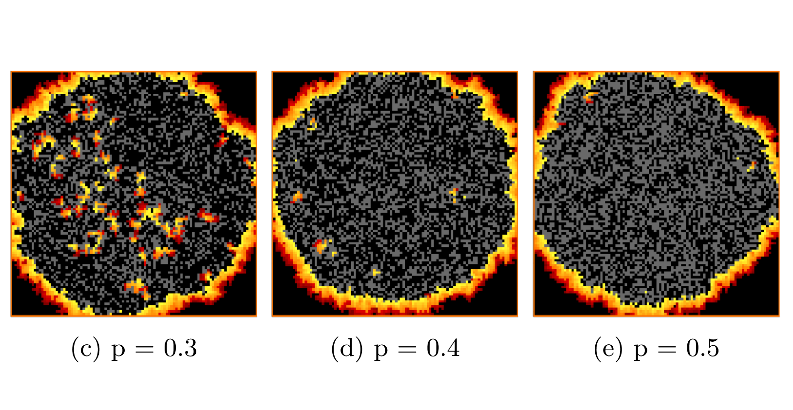
-
2.
Charge Density Estimation
2021
Exploring the piezo-electric effect in PZT and PVDF materials using COMSOL. COMSOL
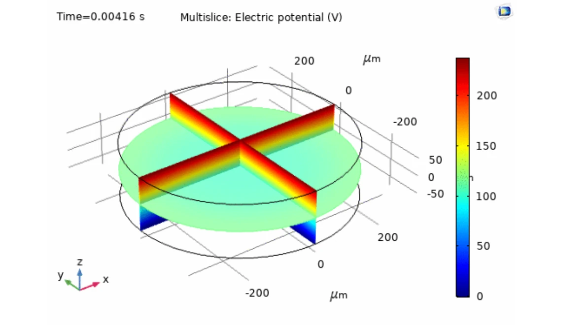
-
3.
News Recommender System
2022
An NLP-based recommender system using web scraping and collaborative filtering. Python
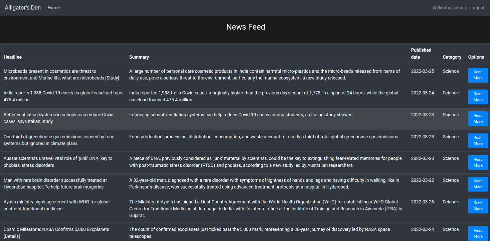
-
4.
Signature Fraud Detection
2022
Applying K-means clustering to classify and detect fraudulent signatures. Python
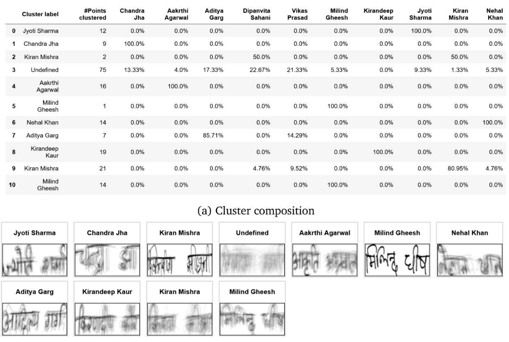
-
5.
Surface Waves in Fluids
2023
A theoretical exploration of the physics of waves on liquid surfaces. HTML
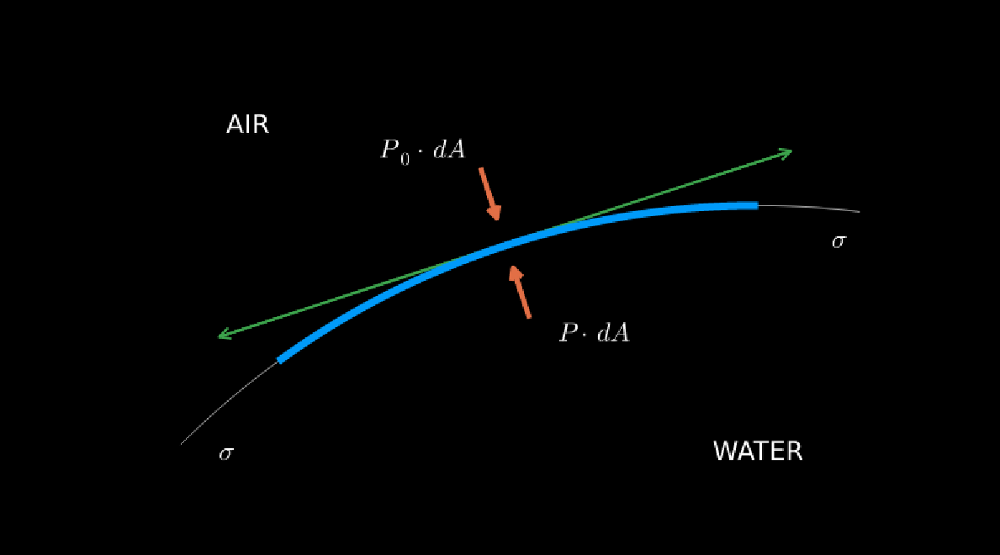
Visualization
Interactive sketches and physics visualizations from my early days of programming.
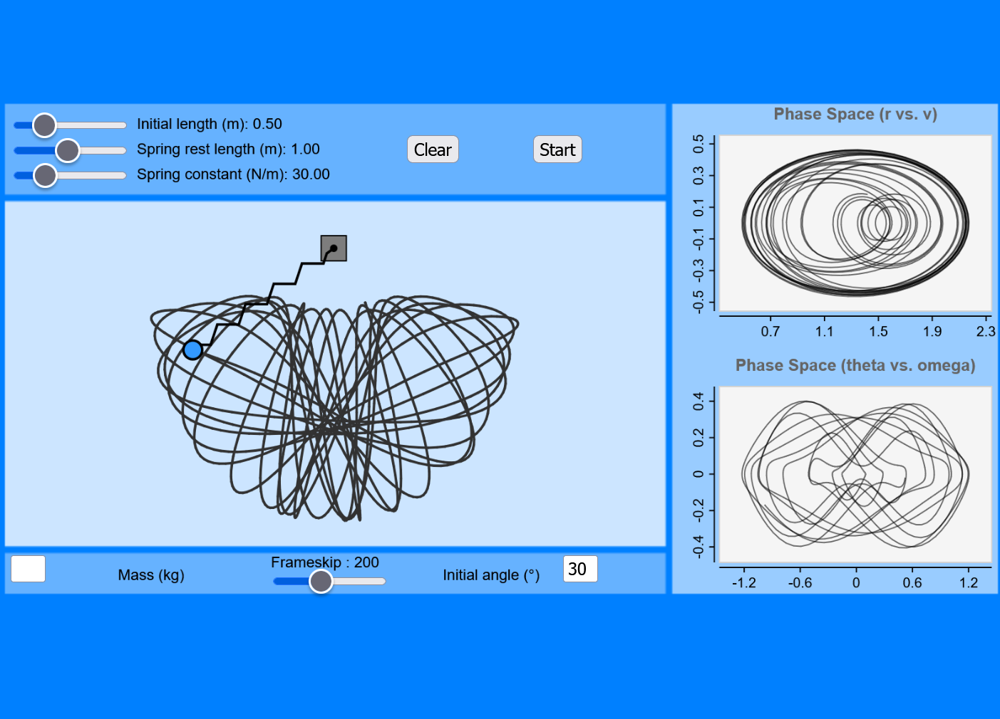
Simulation of a pendulum with an elastic string, demonstrating chaotic motion trajectories.
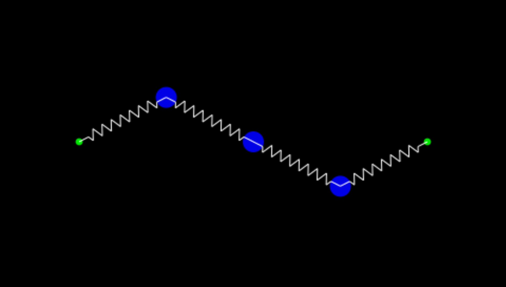
A collection of physics-based visualizations created using the Javis.jl library.
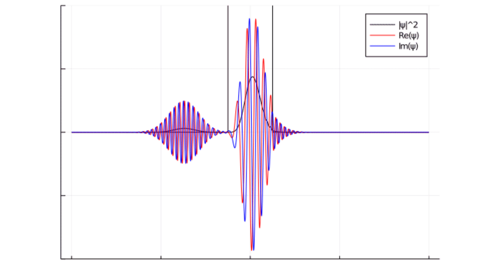
Simulation of the time-evolution of a quantum mechanical wave packet in various 1D potentials.